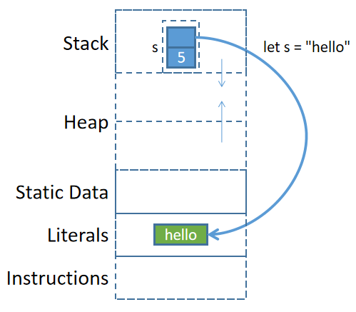

字符串
Rust中的字符串是一個難點，此處先簡單介紹關於字符串的一部分內容，更多細節和用法留到後面再單獨解釋。
Rust有兩種字符串類型：str和String。其中str是String的切片類型，也就是說，str類型的字符串值是String類型的字符串值的一部分或全部。
字符串字面量
字符串字面量使用雙引號包圍。
fn main(){ let s = "junmajinlong.com"; println!("{}", s); }
上面賦值變量時進行了變量推導，推導出的變量數據類型為&str。因此，上述代碼等價於：
fn main(){ let s: &str = "junmajinlong.com"; println!("{}", s); }
實際上，字符串字面量的數據類型均為&str，其中str表示str類型，&表示該類型的引用，即一個指針。因此，&str表示的是一個指向內存中str類型數據的指針，該指針所指向的內存位置處保存了字符串數據"junmajinlong.com"。
至於為什麼字符串字面量的類型是&str而不是str，後文再解釋。
String類型的字符串
String類型的字符串沒有對應的字面量構建方式，只能通過Rust提供的方法來構建。
例如，可以通過字符串字面量(即&str類型的字符串)來構建。
fn main(){ // 類型自動推導為: String let s = String::from("junmajinlong.com"); let s1 = "junmajinlong".to_string(); println!("{},{}", s, s1); }
String類型的字符串可以原地修改。例如：
fn main(){ let mut s = String::from("junmajinlong"); s.push('.'); // push()可追加單個char字符類型 s.push_str("com"); // push_str()可追加&str類型的字符串 println!("{}", s); // 輸出：junmajinlong.com }
理解str和String的聯繫和區別
注：這部分內容對剛接觸Rust的人來說較難理解，可先跳過，等閱讀了後面一些章節再回來看。
str類型的字符串和String類型的字符串是有聯繫的：str字符串是String類型字符串的切片(slice)類型。關於切片類型，參考Slice類型。
例如，變量s保存了String類型的字符串junma，那麼s[0..1]就是str類型的字符串j，s[0..3]就是str類型的字符串jun。

例如：
fn main(){ let s = String::from("junmajinlong.com"); // 自動推導數據類型為&str // s[0..3]的類型為str // &s[0..3]的類型為&str let s_str = &s[0..3]; // 等價於&(s[0..3])而不是(&s)[0..3] // 現在s_str通過胖指針引用了源String字符串中的局部數據 println!("{}", s_str); // 輸出：jun }
前面說過，字符串字面量的類型是&str類型。也就是說，字符串字面量實際上是字符串切片類型的引用類型。
fn main(){ // IDE中可看到下面的變量推導出的數據類型為&str let s = "hello"; }
那麼字符串字面量是如何存儲的呢？
對於字面量"hello"來說，並不是先在內存中以String類型的方式存儲"hello"，然後再創建該String數據的引用來得到了一個&str的。
編譯器對字符串字面量做了特殊處理：編譯器編譯的時候直接將字符串字面量以硬編碼的方式寫入程序二進制文件中，當程序被加載時，字符串字面量被放在內存的某個位置(不在堆中也不在棧中，而是在類似於靜態數據區的全局字面量區)。當程序執行到let s="hello";準備將其賦值給變量s時(注：s在棧上)，直接將字面量內存區的該數據地址保存到&str類型的s中。

理解了這一點，再理解let s = String::from("hello");這樣的代碼就很容易了。編譯器將"hello"硬編碼寫入程序二進制文件，程序加載期間字符串字面量被放入字面量內存區，當程序運行到let s = String::from()操作時，從字面量內存區將其拷貝到堆內存中，然後將堆內存中該數據的地址保存到棧內變量s中。